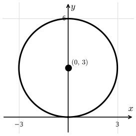
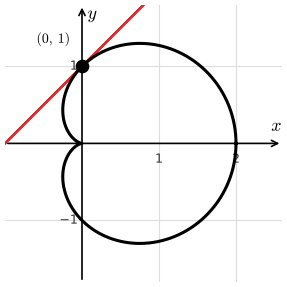

Lesson 66: Polar Coordinates
Polar coordinates give us another way to locate a point in the plane. Instead of moving over \(x\) and up \(y\), we give a distance \(r\) from the origin, called the pole, and an angle \(\theta\) measured counterclockwise from the positive \(x\)-axis.
Converting Between Polar and Rectangular
A point has many polar names. Adding \(2\pi\) to the angle gives the same point, so \((r, \theta)\) and \((r, \theta + 2\pi)\) are the same point.
Convert the polar point \(\left(4, \frac{\pi}{3}\right)\) to rectangular coordinates.
The point is \(\left(2, 2\sqrt{3}\right)\).
Convert the rectangular point \((-1, 1)\) to polar coordinates with \(r > 0\) and \(0 \le \theta < 2\pi\).
The point is in quadrant II, so \(\theta = \frac{3\pi}{4}\). The point is \(\left(\sqrt{2}, \frac{3\pi}{4}\right)\).
A polar equation \(r = f(\theta)\) gives a distance \(r\) for each angle \(\theta\). As \(\theta\) changes, the points \((r, \theta)\) trace out a curve, just like \(t\) did for parametric equations.
In fact, every polar curve is a parametric curve with \(\theta\) as the parameter.
Convert the polar equation \(r = 6\sin\theta\) to rectangular form. What is the shape of the graph?
Multiply both sides by \(r\).
The graph is a circle with center \((0, 3)\) and radius 3.

Look back at the rose on the Parametric Equations page. Show that its graph is the polar curve \(r = \cos(5\theta)\).
With \(r = \cos(5\theta)\), the parametric form of the polar curve is below.
These are the same equations, with \(\theta\) in place of \(t\).
To find the slope of a tangent line to a polar curve \(r = f(\theta)\), treat the curve as a parametric curve with \(\theta\) as the parameter.
Derive the slope formula for a polar curve.
Step 1: Write the polar curve as parametric equations: \(x = r\cos\theta\) and \(y = r\sin\theta\).
Step 2: Recall the parametric slope formula.
Step 3: Find \(\frac{dy}{d\theta}\). Since \(r\) changes with \(\theta\), use the product rule.
Step 4: Find \(\frac{dx}{d\theta}\). Use the product rule again.
Step 5: Divide.
The Slope of a Polar Curve
- Horizontal tangent: \(\frac{dy}{d\theta} = 0\) and \(\frac{dx}{d\theta} \neq 0\).
- Vertical tangent: \(\frac{dx}{d\theta} = 0\) and \(\frac{dy}{d\theta} \neq 0\).
Careful: \(\frac{dr}{d\theta}\) is not the slope of the tangent line. It tells how fast \(r\) is changing, not the slope of the curve.
Consider the polar curve \(r = 1 + \cos\theta\). Find the slope-intercept equation of the tangent line at \(\theta = \frac{\pi}{2}\).
The point is \(x = r\cos\frac{\pi}{2} = 0\), \(y = r\sin\frac{\pi}{2} = 1\).

With \(\theta\) as the parameter, use \(\frac{dx}{d\theta}\) and \(\frac{dy}{d\theta}\) from the tangent line steps in the parametric arc length formula.
Show that \(\left(\frac{dx}{d\theta}\right)^2 + \left(\frac{dy}{d\theta}\right)^2 = r^2 + \left(\frac{dr}{d\theta}\right)^2\). Write \(r\,'\) for \(\frac{dr}{d\theta}\).
The middle terms cancel, and each group becomes 1.
Arc Length of a Polar Curve
Consider the polar curve \(r = \theta^2\) for \(0 \le \theta \le \sqrt{5}\). Find the exact arc length.